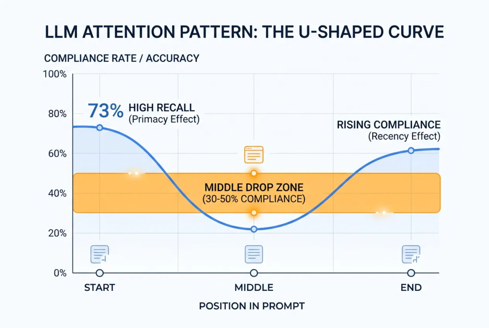
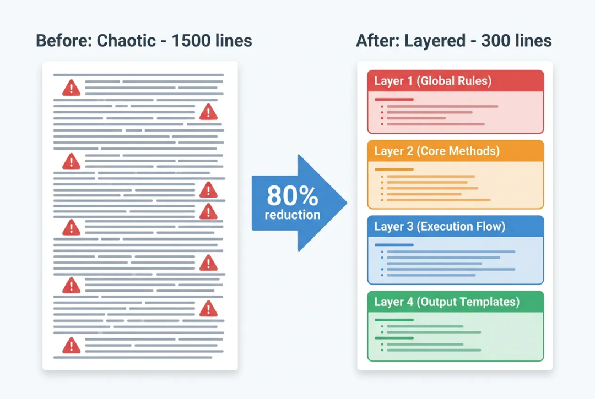

引言：一个让人抓狂的循环
我维护着一个 Agent Skill——一份告诉大模型"你是谁、该怎么做、什么不能做"的 system prompt。它驱动一个数据质量异常检测 Agent，每天自动分析数据、生成报告、定位问题客户。
Skill 上线后很快暴露出一个问题：模型会反复违反写得清清楚楚的指令。 工具选错、被禁字段照样输出、"四个维度不能遗漏"的规则下某个维度因为经常正常就被悄悄跳过。
我的应对方式是接入一个自动修复工具：每次发现 badcase，把问题喂给它，它自动分析原因、生成修复规则、更新文档、提交发布。我只看修复结果，不审核文档本身——效率很高，问题似乎在逐个被解决。
但几十轮迭代后，情况反而恶化了。Skill 从 400 多行膨胀到 1500 行，同一条规则被写了 5 遍、8 遍，散布在不同位置，"严禁"、"铁律"层层加码——反复强调过的问题还是会出现。直到我终于打开文档从头读了一遍，才发现它已经面目全非：同一个意思换了四五种说法散落各处，整份文档臃肿到模型根本"读不动"了。
越强调，文档越长；文档越长，注意力越分散；注意力越分散，违反越多；违反越多，再追加一遍。 一个完美的恶性循环。
这促使我停下来想一个根本问题：为什么模型不听话？是它"故意"忽略，还是有更深层的结构性原因？"再强调一遍"真的有用吗？如果没用，正确的做法是什么？
01
1.1 原因一："迷失在中间"——注意力的 U 形曲线
Stanford 的经典论文 Lost in the Middle 揭示了一个关键事实：LLM 对输入序列的注意力分布不是均匀的，而是呈 U 形曲线——开头和末尾的内容获得最多关注，中间区域容易被"遗忘"。

实际数据：开头指令约 73% 遵循率，末尾略低但仍可靠，中间区域遵循率下降 30%–50%。根因在于 Transformer 的位置编码机制——两个 token 距离越远，注意力越弱。
我的 Skill 正是如此：300 行时关键规则在前 50 行，模型几乎不犯错。膨胀到 1500 行后，前 50 行没动，但后面多了 1400 行"中间内容"，注意力被严重稀释——犯错频率明显上升。
1.2 原因二：隐性冲突——模型的"静默择一"
当 Skill 中多条指令之间有微妙的张力，模型不会报错，而是静默选择一条遵循、丢弃另一条。研究显示，即使是顶级模型，在指令冲突场景下的解决失败率也在 23%–47% 之间。
我的 Skill 中就有这样的冲突：
规则 A："分析必须覆盖四个质量维度"
规则 B："只对有异常的维度展开，正常维度不展开"
当某个维度长期稳定在 99.9% 时，模型认为"规则 B 说不展开→直接跳过"。它不是忘了规则 A，而是规则 B 给了它一个"合理的"跳过理由。
1.3 原因三：训练偏差——模型有自己的"本能"
LLM 在训练阶段形成了一些内隐的行为倾向，会和你的指令"对着干"：
倾向于输出"建议"：训练语料中大量 Q&A 以建议结尾，模型会本能地在分析后追加建议，即使你说了"禁止给建议"
倾向于关联相关概念：分析"归因失败"时，模型自动联想到"ID 映射"，即使你明确禁止——因为训练数据里这两个概念总是一起出现
倾向于"有用"：模型的优化目标鼓励它多给信息，被要求"过滤不展示"时有天然的抵触
这类问题特别棘手，因为你越说"禁止"，模型反而越需要先"激活"那个被禁概念——心理学中叫"粉红大象效应"。LLM 有类似的机制，否定指令反而提高被禁内容出现的概率。
1.4 原因四：上下文窗口的"淘汰赛"
多轮对话中，当上下文窗口接近满载时，早期的 system prompt 内容会被截断或压缩。你精心撰写的 1500 行指令，到对话第 5 轮时可能只剩一部分还在有效上下文中。
这解释了为什么"第一次提问表现完美，多问几轮后又开始犯错"——不是它忘了，是那些规则已经被挤出了注意力窗口。
02
回到我的经历。每次发现 badcase，自动修复工具的处理方式几乎一模一样：生成一段新规则，追加到文档中。
理论上，它应该先通读全文，找到已有规则，分析根因——是措辞不清？位置不对？还是和其他规则冲突？然后选择最小化修改方案。实际上，它做的只是：读到 badcase 描述，生成一段新规则，插入到一个它觉得相关的位置。
它选择了最安全的路径：追加。不碰已有规则（万一改坏了呢？），不分析位置问题（那需要理解注意力机制），不做全局审视（上下文预算不够扫描 1000+ 行文档）。
这不是个别工具的问题，而是当前 LLM 在"修改长文档"上的结构性短板：
局部视角 vs 全局视角：修复工具聚焦于"这个 badcase 怎么解决"，很难对长文档做全局语义扫描
"安全追加"偏好：训练数据中，"追加内容"远比"修改中间段落"更常见、更安全
没有"文档健康度"概念：它不知道最优长度是多少，不知道重复本身是一种坏味道
自动化移除了天然刹车：手动修 Skill 时，人的懒惰反而是膨胀刹车。自动修复把它拆掉了——每次 badcase 都被勤勤恳恳地转化为新规则
回溯 git 提交历史，膨胀过程很清晰：
40 次修复追加了约 1100 行，平均每次 27 行——每次都是"一小段"，但累积就是原文的 2.75 倍。其中真正的新知识可能只有 300 行，剩下 800 行都是重复表述。
任何基于"提取经验→自动追加规则"的反馈系统，如果不做额外约束，都会重蹈覆辙。
03
既然"再强调一遍"不是答案，那什么才是？
3.1 解法 1：分层架构——位置即优先级
将 Skill 视为有层次结构的文档，位置决定优先级：
[第 1 层] 全局不可违反规则（最前面，20-50 行以内）├── 工具选择规则├── 数据过滤规则└── 全局禁令清单[第 2 层] 核心方法论（紧随其后）├── 分析框架└── 判定规则[第 3 层] 执行流程（中间区域，允许适度遗漏）├── 分析步骤└── 维度下钻规则[第 4 层] 输出模板（末尾，利用近因效应）└── 报告格式

关键点：全局禁令只在第 1 层写一次，后续章节不再重复，只做引用。禁令始终在最前面（遵循率最高），消除重复后文档大幅缩短，中间内容也能获得更多注意力。
实际效果：从 1500 行精简到 300 行（减少 80%），核心就是这个分层策略——把散布在 8 个位置的同一条规则合并到开头。
3.2 解法 2：消除隐性冲突——规则要无歧义
回到"某个维度总被遗漏"的问题，根因是两条规则隐性冲突。修复方式是让优先级显式化：
❌ 模糊版本：- "分析必须覆盖四个维度"- "只对有异常的维度展开"✅ 无歧义版本：- "总览表格必须包含四个维度的全部指标行（无论是否异常）"- "维度下钻只对异常维度展开（但总览表不受此规则影响）"
技巧：当两条规则存在张力时，明确标注各自的适用范围，消除模型"合理推理出错误行为"的空间。
3.3 解法 3：正向指令替代否定指令
多项研究表明，模型对"不要做 X"的遵循率显著低于"只做 Y"。原因很直觉：token 生成本质上是正向选择——选择下一个最可能的 token。负向指令只是微弱降低了不想要的 token 概率，而正向指令会主动提升期望输出的概率。
发现这个规律后，我把整份 Skill 的"全局禁令"从一列"严禁"改造成了"场景→正向行为→对应禁止项"的三列表格：
正向行为放在禁止项前面，占更多篇幅。模型读到这张表时，注意力首先落在"该做什么"上。禁止项变成简短的补充说明，而不是主角。
核心思路：不要告诉模型"别想粉红大象"，而是告诉它"想一只蓝色的猫"。
3.4 解法 4：结构化格式——降低理解成本
表格、编号列表、明确的标题层级，比大段自然语言描述更容易被模型"扫描"到：
❌ 难以遵循："查询这类表时用工具 A，查询那类表时用工具 B，大部分场景都用 A，只有需要查全量明细时才用 B..."✅ 容易遵循：| 表类型 | 使用的工具 ||--------|-----------|| 聚合表、明细表、维表 | 工具 A || 全量明细表 | 工具 B |
同样的信息量，表格格式的遵循率显著更高。
3.5 解法 5：指令三明治——首尾呼应
对绝对不能违反的核心约束，采用"三明治"模式：
开头写一遍（首因效应）
中间是正常的执行流程和上下文
末尾再简要重申一遍（近因效应）
注意：只对最关键的 2-3 条规则使用此模式——否则又回到了"到处重复"的老路。三明治和无序重复的区别在于：三明治是有意识地利用首因+近因效应，只在首尾两个注意力高峰区放置；而无序重复是在中间区域堆砌。
3.6 解法 6：外置知识——给 Skill 减负
Skill 膨胀到 1500 行，很大原因是把所有东西都塞进去了——表结构、SQL 模板、报告格式、下钻规则……这些参考性内容不需要常驻 Skill。
原则很简单：
规则类内容（行为约束）→ 留在 Skill
参考类内容（需要时查阅的知识）→ 外置为引用文件
这样 Skill 保持在 300-500 行的"甜区"，把注意力预算留给真正重要的行为约束。
但外置不是扔出去就完事了——我在精简 Skill 后做了一次参考文件审计，发现了一个惊人的问题。
3.7 解法 7：参考文件一致性——"教材"不能和"规则"打架
外置参考文件后，一个容易被忽略的问题浮出水面：参考文件本身可能在"教"模型犯错。
Skill 说"输出时跳过某类字段"，但 SQL 模板里几十处都在 SELECT 这些字段；Skill 要求"四个维度都不能遗漏"，但模板示例只覆盖了其中两个。模型一边读规则，一边照着模板写——两个信号矛盾，结果就是时灵时不灵。
修复原则：
模板中彻底删除被规则禁止的内容（注释掉也不行——注释也是 token）
模板示例必须完整覆盖规则要求的所有维度，不给"部分覆盖"的坏示范
关键格式差异（如不同表的日期格式）放到显眼的对照表中，不让细节隐藏在角落
一句话：参考文件就是模型的"课本"。课本里的示例违反了规则，模型就会在"听老师的话"和"照课本做"之间反复横跳。
3.8 解法 8：给自动修复加"刹车"
如果你也用工具自动迭代 Skill，一定要加防膨胀机制：
行数预算：超过阈值时，强制进入"重构模式"而非"追加模式"
语义去重：插入新规则前，扫描是否已有语义相近的表述
单次追加上限：每次变更不超过 20 行，超了就要考虑外置
定期压缩：每 N 次修复后，强制做一次全局审视和规则合并
这和代码工程中的"技术债管理"是一回事：每次 hotfix 都在堆债，不定期重构就会腐化。
04
这段经历让我得出一个反直觉的结论：
在 Prompt Engineering 中，"少即是多"不是鸡汤，是物理定律。
注意力机制有固定的"带宽"。你往 Skill 里塞的内容越多，每条指令分到的注意力就越少。重复一条规则 5 遍，看似强调了，实际上是在抢占其他规则的注意力配额。精简后的 300 行版本遵循率明显优于 1500 行版本——因为每条规则终于有足够的注意力去"读懂"了。
如果你也在维护复杂的 Agent Skill，不妨对照这个检查清单：
Skill 超过 500 行了吗？ 该分拆和外置了
最关键的禁令在前 10% 吗？ 不在就赶紧移上去
有隐性冲突的规则吗？ 逐对检查"合理推理出错误行为"的空间
同一规则重复超过 2 次？ 说明架构有问题，不是强调不够
参考内容和规则分开了吗？ 表结构、模板不该和行为约束混在一起
参考文件和规则一致吗？ 模板里有没有被禁止的字段？示例覆盖完整吗？
自动修复有"刹车"吗？ 只会追加不会重构，那就是一台膨胀机器
Prompt Engineering 正在从"写好一句话"进化为"设计一个系统"。指令位置、注意力分配、规则层级——这些工程化思维，比反复加"严禁"有效得多。
-End-
原创作者｜郑姝雅